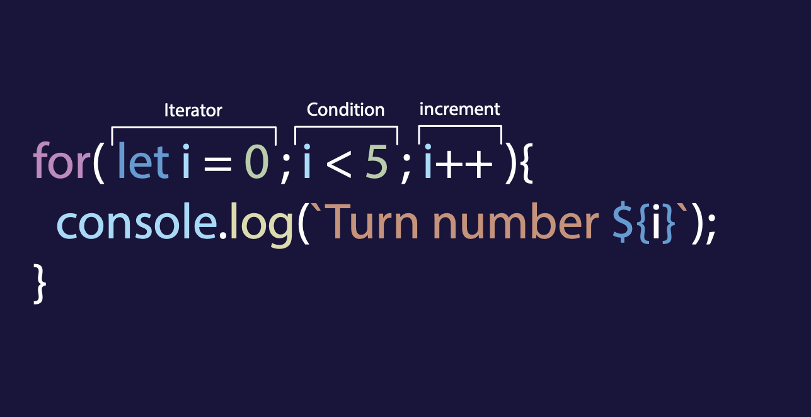
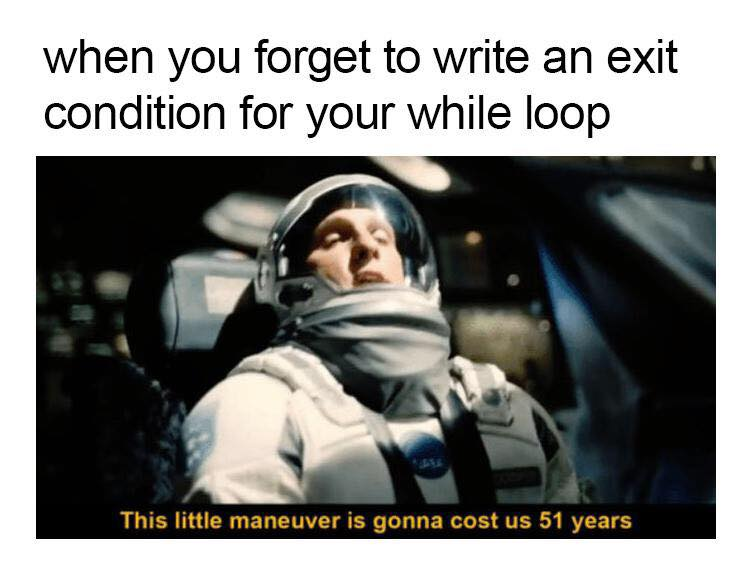

👩🏫 JS Basics 08 - Les boucles
Objectifs
- Créer des boucles en JavaScript
- Parcourir des tableaux
Pré-requis
Avoir validé les quêtes suivantes :
Introduction
Comme mentionné dans les quêtes précédentes, l'un des grands principes en développement est de ne pas se répéter (en anglais "D.R.Y.", comme Don't Repeat Yourself). Pour éviter d'écrire le même code encore et encore, nous pouvons utiliser quelque chose appelé boucle.
Commençons!
Sommaire
Qu'est-ce qu'une boucle ?
Une boucle est un moyen d'exécuter le même code plusieurs fois jusqu'à ce qu'une certaine condition soit remplie.
Par exemple, imagine une voiture sur une piste de course, la voiture doit faire x fois le tour de la piste avant d'atteindre la fin du parcours.
Exemple d'une boucle:
for (let i = 0; i < 5; i++) {
console.log("Turn number " + i);
}
/*
Turn number 0
Turn number 1
Turn number 2
Turn number 3
Turn number 4
*/
Différents types de boucles
La boucle "for"

for nécessite 3 paramètres pour fonctionner:
- Le premier est une variable appelée itérateur, que nous devons créer et fixer à une valeur (ici nous voulons partir de zéro). Cette variable sera notre "compteur".
- La seconde est la condition que nous voulons vérifier avant chaque tour de boucle (itération).
- Et la troisième est l'incrément. L'incrément sera exécuté à la fin de chaque boucle et, généralement, nous ajoutons un à l'itérateur.
Voici un exemple:
for (let i = 0; i < 5; i++) {
console.log("Turn number " + i);
}
Dans cet exemple, nous créons d'abord la variable i qui est fixée à la valeur zero.
let i = 0
Par convention, nous appelons souvent cette variable "i" (signifie itérateur ou index)
Ensuite, nous voulons que les instructions dans la boucle soient répétées tant qu'une certaine condition est vérifiée. Dans ce cas, nous voulons faire une boucle jusqu'à ce que la valeur de "i" atteigne 5 (donc cinq fois).
i < 5
Pour chaque tour de boucle, nous augmentons la valeur de "i" de un (afin que la boucle s'arrête à un moment donné).
i++
De cette façon, la boucle partira de 0, et vérifiera à chaque tour si "i" est inférieur à 5.
Si Oui ⇒ Elle exécutera le code et augmentera la valeur de un. Et ensuite, on recommence.
Si Non ⇒ la boucle s'arrête.
https://repl.it/@WildCodeSchool/FickleGrownGlobalarrays
Clique sur "Play" pour lancer le code. Tu peux également modifier le code et tester différents scénarios par toi-même.
🔬 Fais une expérience
Crée une boucle for qui affiche "Number" + la valeur de l'itérateur 10 fois dans la console.
https://repl.it/@WildCodeSchool/Empty-project
Voir la solution
for (let i = 0; i < 10; i++) {
console.log(`Number ${i}`);
}
Parcourir un tableau
Tu peux utiliser une boucle pour parcourir un tableau :
const fruits = ["Apple", "Peach", "Banana"];
for (let i = 0; i < fruits.length; i ++) {
console.log(fruits[i]);
}
Ici, tu peux voir que nous avons un tableau qui contient 3 éléments.
Nous créons une boucle for, dont l'itérateur va de 0 à fruits.length - 1 (soit 2, il faut bien comprendre que c'est l'opérateur < qui est utilisé ici, donc i < fruits.length retourne false quand i atteint 3 et la boucle s'arrête).
Au premier tour, elle affichera fruits[0], puis fruits[1] et enfin fruits[2].
https://repl.it/@WildCodeSchool/ArtisticChocolateBusinesssoftware
🔬 Fais une expérience
Maintenant, c'est à ton tour ! Essaye de parcourir avec une boucle le tableau suivant et d'afficher chaque élément dans la console.
https://repl.it/@WildCodeSchool/ArtisticChocolateBusinesssoftware-2
Voir la solution
for (let i = 0; i < animals.length; i++) {
console.log(animals[i]);
}
Les boucles "while" et "do...while"
Nous avons vu la boucle for. Il existe d'autres façons de créer des boucles.
While
Pour utiliser une boucle while, tu dois créer l'itérateur avant la déclaration de la boucle.
Passe la condition que tu veux remplir (c'est à dire i < 5) dans les parenthèses ().
Avec une boucle while et do...while, il faut faire attention de ne pas oublier d'incrémenter (augmenter) la valeur de i.
Sinon, cela pourrait provoquer une boucle infinie.
Si i n'augmente pas, il n'atteint jamais 5, donc la boucle continue et ton ordinateur peut planter.
let i = 0;
while (i < 5) {
console.log(`turn number ${i}`);
i++;
}
🔬 Fais une expérience
Essaye d'écrire une boucle while, qui commence à 10 et affiche le nombre de 10 à 0 - donc cette fois i doit être décrémenté (diminuer).
https://repl.it/@LonardFlachs/Empty-project
Voir la solution
let i = 10;
while (i >= 0) {
console.log(`turn number ${i}`);
i--;
}
Do...While
do...while est similaire à while mais l'action est exécutée avant de vérifier la condition (la boucle fait donc toujours au moins un tour).
https://repl.it/@WildCodeSchool/ShadowyTalkativeOutput
Que faire en cas de boucle infinie ?

Si tu as lancé une boucle infinie par erreur, ferme immédiatement l'onglet de ton navigateur pour y mettre fin.Tu peux également utiliser le gestionnaire de tâches chrome pour finir le processus ou utiliser le débogueur du navigateur.
Portée (scope) / Contexte
En Javascript, dès que l'on écrit du code, le contexte est très important : on ne peut pas utiliser une variable déclarée à l'intérieur d'une boucle en dehors de cette dernière.
Les accolades { } définissent un contexte local.
Exemple 1 :
let sum = 0;
for (let i = 0; i < 10; i++) {
const name = "Pierre";
console.log(name + " saw " + sum + " StarWars movies.");
sum++;
// fonctionne correctement dans le contexte de la boucle
}
console.log(sum);
// tu verras la valeur de sum
console.log(name);
// tu verras une erreur 'reference error: name is not defined'
Par exemple, dans ce cas, la variable name sera disponible uniquement dans le contexte de la boucle (à l'intérieur des accolades {}) et elle ne sera pas disponible en dehors.
La variable sum est disponible dans toute la boucle et en dehors, car elle a été créée en dehors du contexte de la boucle.
Si tu crées une variable à l'intérieur d'accolades {}, cette variable sera disponible uniquement à l'intérieur de ces accolades.
Sachant cela maintenant, nous devrions être capables de créer des boucles qui fonctionnent pour nos projets en tenant compte du contexte.
Une vidéo géniale à propos du scope:
Résumé
- On peut utiliser des boucles en Javascript pour répéter l'exécution d'un bloc de code plusieurs fois
- Il y a différentes boucles, "for" est la plus utilisée mais il y a aussi "while" et "do...while".
- Faire des erreurs dans tes boucles peut entraîner une boucle infinie qui peut faire planter ton programme.
Challenge
Es-tu prêt à relever un défi ?
Ton objectif est de décoder un message en utilisant les boucles :
// Use a loop to remove the 'X' and use console.log to reveal the message
const hiddenMessage = ["X", "X", "X", "X", "W", "X", "E", "X", "X", "X", "X", "X", "L", "X", "X", "X", "X", "X", "X", "X", "X", "X", "X", "X", "X", "X", "X", "X", "X", "X", "X", "X", "X", "L", "X", "X", "X", "X", "X", "X", "X", "X", "X", " ","X", "X", "X", "X", "X", "X", "X", "X", "D", "X", "X", "X", "X", "X", "X", "X", "X", "X", "X", "X", "X", "X", "X", "X", "X", "X", "X", "X", "X", "X", "X", "X", "X", "X", "X", "X", "X", "X", "X", "X", "X", "X", "O", "X", "X", "X", "X", "X", "X", "N", "X", "X", "X", "X", "E", "X", "X", "X", "X", "X", "X", "X", "X", "X", "X", " ", "X", "!", "X"];
Ici, nous avons un tableau avec beaucoup de string différentes. Ta mission est d'utiliser une boucle pour ignorer la lettre "X" (en utilisant une condition) et console.log pour révéler le message.
Poste ton code en solution.
Critères d'acceptation
- [ ] Le message secret est décodé